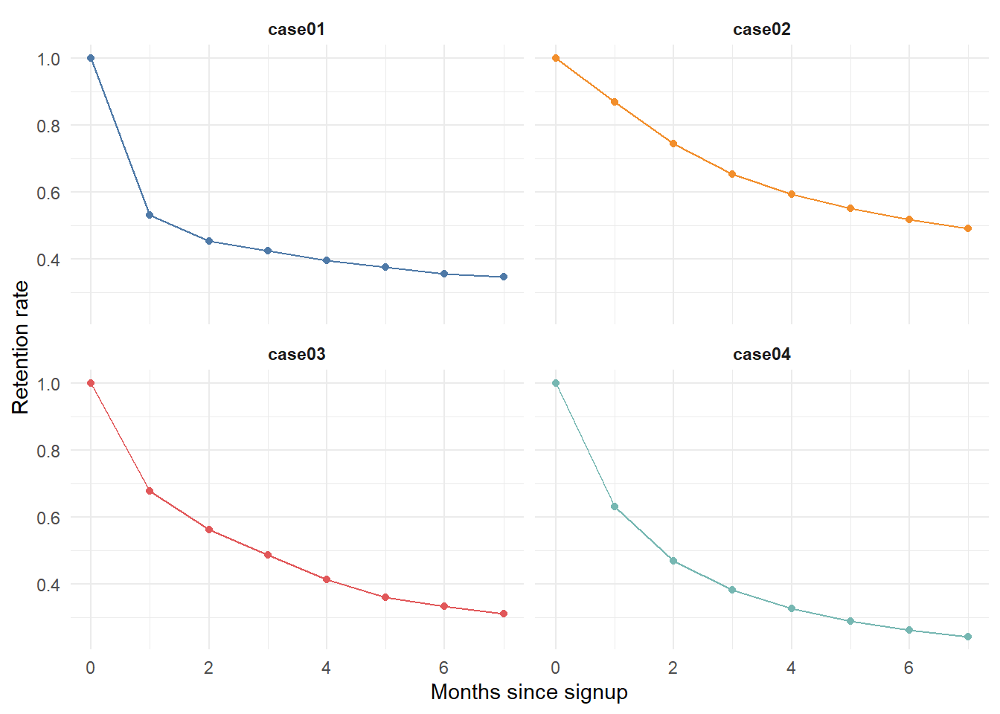
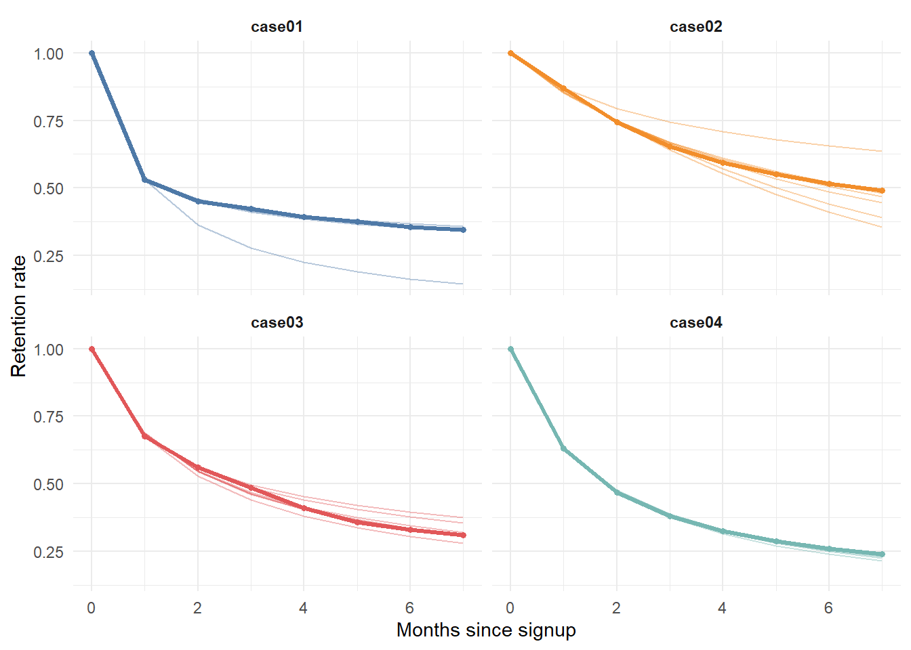

flowchart LR A[Transaction /<br/>retention data] --> B[Estimate latent<br/>survival process] B --> C[Project retention<br/>over horizon N] M[Margin & cost<br/>process] --> D C --> D[Discount expected<br/>per-period cash flows] D --> E[CLV per customer] E --> F[Aggregate:<br/>customer equity]
14 Customer Lifetime Value
Customer lifetime value (CLV)—often called lifetime value (LTV) in practice—is the present value of the future cash flows a firm expects to earn from a customer relationship over its remaining duration. It reframes the customer from a transaction into an asset: the question is no longer “what did this person buy today?” but “what is this relationship worth, net of the cost of sustaining it, for as long as it lasts?” That shift in unit of analysis is the conceptual core of customer-centric marketing. Once customers are assets, acquisition becomes a capital budgeting decision, retention becomes asset maintenance, and the firm’s total customer base aggregates into customer equity—a balance-sheet-style summary of the demand side of the business (Rust, Kannan, and Peng 2002; Gupta et al. 2006).
CLV matters for two reasons that map onto the book’s two audiences. Scientifically, it forces an explicit stochastic model of three primitives—how long a customer stays (retention or survival), how often and how much they buy (transaction flow and spend), and how those translate into margin net of marketing cost—each of which is a latent process observed only through noisy transaction data. Commercially, CLV is the metric that allocates acquisition budget, prioritizes service, sizes loyalty programs, and, when aggregated, has been shown to track shareholder value (Gupta et al. 2006; Kumar et al. 2010). A century-old practitioner heuristic captures the stakes: a single year’s projected business typically recovers only about half of a customer’s full lifetime value, a ratio that varies widely by industry (Kumar, Petersen, and P.Leone 2007). Truncating the horizon at one year therefore discards roughly half the asset.
This chapter builds CLV from its primitives. It first defines the construct formally and states the assumptions under which the familiar closed-form formulas hold. It then develops the two dominant modeling traditions—the managerial discounted-margin formulation and the probabilistic (buy-till-you-die and shifted-beta-geometric) tradition—and shows, with reproducible code, how to estimate a retention curve from sparse data and roll it forward into a value forecast. It closes by extending the asset view beyond the focal customer’s own purchases to the value a customer creates by referring others (customer referral value) and by surveying the identification problems that make CLV easy to compute and hard to compute correctly.
14.1 The Construct and Its Assumptions
Fix a customer \(i\) and let periods be indexed by \(j\) (annual or semiannual). Three latent quantities drive value: the probability \(p(\text{Buy}_{ij}=1)\) that the customer is active and transacts in period \(j\); the contribution margin \(\text{CM}_{ij}\) the customer generates conditional on transacting; and the marketing cost \(\text{MC}_{ij}\) the firm directs at the customer to keep the relationship alive. Future cash flows are discounted at a per-period rate \(r\). Writing \(T\) for the end of the observation (calibration) window and \(N\) for the number of periods projected forward, the discounted-margin definition of CLV is
\[ \text{CLV}_i \;=\; \sum_{j=T+1}^{T+N} \frac{p(\text{Buy}_{ij}=1)\,\widehat{\text{CM}}_{ij}}{(1+r)^{\,j-T}} \;-\; \sum_{j=T+1}^{T+N} \frac{\widehat{\text{MC}}_{ij}}{(1+r)^{\,j-T}} . \tag{14.1}\]
Equation 14.1 is the formulation popularized in the customer-equity program of Kumar and colleagues (Kumar et al. 2008; Kumar et al. 2010). Several features deserve emphasis because they are routinely elided in practice. The summation starts at \(j=T+1\): CLV is a forward-looking quantity, the value of the relationship from today onward, not the historical revenue already booked.1 The purchase probability, contribution margin, and marketing cost are all predicted (\(\widehat{\,\cdot\,}\)), so CLV inherits the sampling error of three separate forecasting models. And the discount factor must be expressed at the period frequency of the data: a 15% annual rate corresponds to a semiannual factor of \(r \approx 0.07238\), since \((1.07238)^2 \approx 1.15\) (Kumar et al. 2008).
Customer lifetime value. The present value of all future cash flows attributable to the relationship with a customer—margin from the customer’s own purchases, net of the marketing cost of serving and retaining them—over the expected remaining lifetime of that relationship.
A useful special case exposes the economics. Suppose margin per active period is a constant \(m = \text{CM} - \text{MC}\) and the customer is retained from one period to the next with constant probability \(\rho\) (the retention rate). Then the expected discounted value of an infinite-horizon relationship collapses to a geometric series,
\[ \text{CLV} \;=\; m \sum_{t=0}^{\infty} \left(\frac{\rho}{1+r}\right)^{t} \;=\; m \,\frac{1+r}{\,1+r-\rho\,}, \tag{14.2}\]
valid whenever \(\rho < 1+r\). The factor \((1+r)/(1+r-\rho)\) is the margin multiple: at \(\rho = 0.8\) and \(r = 0.1\) it equals \(1.1/0.3 \approx 3.67\), so a loyal customer is worth roughly three and two-thirds years of current margin. Two modeling decisions are buried in Equation 14.2 and matter enormously: the constancy of \(\rho\) (real retention curves are not memoryless, as the next section shows) and the choice of horizon (the infinite sum versus a finite \(N\)). Both are where naive CLV estimates go wrong.
14.1.1 Two Traditions
The literature splits into two complementary approaches to operationalizing Equation 14.1, summarized in Table 14.1. The managerial tradition predicts the components—purchase incidence, margin, marketing cost—with separate regression or machine-learning models, typically on a contractual or panel-with-covariates dataset, and is the workhorse of the customer-equity literature (Kumar et al. 2008; Kumar et al. 2010; Gupta et al. 2006). The probabilistic tradition instead posits a small generative model for the latent purchase and dropout processes and derives expected value in closed form; its canonical members are the Pareto/NBD and BG/NBD “buy-till-you-die” models for noncontractual settings (Schmittlein and Mahajan 1982) and the shifted-beta-geometric (sBG) model for discrete-time contractual settings, developed below. A third, structural strand models the customer’s underlying utility and budget constraint and derives CLV as an implication of choices (Sunder, Kumar, and Zhao 2016), trading tractability for behavioral fidelity.
| Dimension | Managerial / component models | Probabilistic models |
|---|---|---|
| What is modeled | Each cash-flow component separately | Latent purchase + dropout processes |
| Typical data | Contractual or covariate-rich panel | Recency–frequency transaction logs |
| Covariates | Rich (demographics, marketing) | Few or none |
| Output | Per-customer point forecast | Posterior expected value |
| Strengths | Targeting, what-if on marketing | Parsimony, honest uncertainty |
| Weakness | Many models to maintain and validate | Hard to attach drivers/covariates |
The remainder of this chapter develops the probabilistic tradition in depth, because it most cleanly exposes the latent-process assumptions on which every CLV number depends, and because it estimates cleanly from the sparse retention data firms actually hold. Figure 14.1 shows how the pieces compose.
14.2 Retention, Survival, and the Shifted-Beta-Geometric Model
The single most consequential primitive in Equation 14.1 is the path of the purchase probability over time. In a contractual setting—subscriptions, memberships, insurance—the firm observes exactly when each customer churns, and the object of interest is the survivor function \(S(t)=\Pr(\text{still active at }t)\). The naive approach assumes a constant retention rate \(\rho\) and sets \(S(t)=\rho^{t}\), the memoryless geometric curve underlying Equation 14.2. This is almost always wrong in a specific and predictable direction: observed aggregate retention rates rise with tenure. Customers who have stayed many periods are disproportionately the intrinsically loyal ones; the churn-prone have already left. Aggregate retention climbs not because any individual becomes more loyal but because the surviving population is increasingly self-selected toward loyalty—a pure sorting (heterogeneity) effect, not a duration-dependence effect.
The shifted-beta-geometric model formalizes exactly this intuition and is the discrete-time benchmark for contractual CLV. Each customer has a fixed but unobserved per-period churn probability \(\theta\). Conditional on \(\theta\), the period of churn follows a (shifted) geometric distribution: the customer survives each period with probability \(1-\theta\) and churns with probability \(\theta\), so
\[ P(T = t \mid \theta) = \theta\,(1-\theta)^{\,t-1}, \qquad t = 1, 2, \dots \tag{14.3}\]
Heterogeneity across customers is captured by mixing \(\theta\) over the population with a Beta prior, \(\theta \sim \text{Beta}(\alpha,\beta)\), whose density is \(f(\theta)=\theta^{\alpha-1}(1-\theta)^{\beta-1}/B(\alpha,\beta)\). Integrating the individual churn probability over this prior yields closed-form aggregate churn and survivor functions that depend only on the two parameters \((\alpha,\beta)\):
\[ P(T = t) = \frac{B(\alpha+1,\;\beta+t-1)}{B(\alpha,\beta)}, \qquad S(t) = \frac{B(\alpha,\;\beta+t)}{B(\alpha,\beta)} . \tag{14.4}\]
These satisfy the convenient forward recursions \(P(1)=\alpha/(\alpha+\beta)\), \(P(t)=P(t-1)\,(\beta+t-2)/(\alpha+\beta+t-1)\), and \(S(t)=S(t-1)-P(t)\), which is exactly how the estimation code below evaluates them. The model’s key qualitative property—rising aggregate retention from fixed individual propensities—emerges purely from the Beta mixture; no individual’s \(\theta\) ever changes.
Estimation. With cohort data giving the number of customers \(n_t\) surviving at each tenure \(t\) (equivalently, the number churning, \(d_t = n_{t-1}-n_t\)), the parameters are estimated by maximum likelihood. The log-likelihood for a cohort observed through period \(\tau\) sums the log-probability of each observed churn over its churn period plus the log-survivor probability for those still active at the end of the window:
\[ \ell(\alpha,\beta) = \sum_{t=1}^{\tau} d_t \,\log P(T=t) \;+\; n_{\tau}\,\log S(\tau). \tag{14.5}\]
The last term is the right-censoring contribution: customers still active at \(\tau\) contribute the probability of surviving at least that long. Identification is weak when the window is short relative to the heterogeneity—\(\alpha\) and \(\beta\) are separately identified only once the curvature of the survival curve is visible—which is why the projections below stabilize as more months of history are used.
The following example reconstructs the analysis of a subscription business: four cohorts (“cases”) with markedly different retention dynamics, each observed for eight months. The goal is to fit the sBG model and project retention forward. We first visualize the raw curves.
library(tidyverse)
set.seed(13)
# Observed retention rate by months since signup (month 0 = 100%)
df_ret <- tibble(
month_lt = 0:7,
case01 = c(1, .531, .452, .423, .394, .375, .356, .346),
case02 = c(1, .869, .743, .653, .593, .551, .517, .491),
case03 = c(1, .677, .562, .486, .412, .359, .332, .310),
case04 = c(1, .631, .468, .382, .326, .289, .262, .241)
) |>
pivot_longer(-month_lt, names_to = "example", values_to = "retention_rate")
ggplot(df_ret, aes(month_lt, retention_rate, colour = example)) +
geom_line() + geom_point() +
facet_wrap(~ example) +
scale_colour_manual(values = c("#4e79a7", "#f28e2b", "#e15759", "#76b7b2")) +
labs(x = "Months since signup", y = "Retention rate") +
theme_minimal() +
theme(legend.position = "none", strip.text = element_text(face = "bold"))
We next implement the sBG churn, survivor, and (negative) log-likelihood functions following 1 and Equation 14.5, then optimize.
# Aggregate churn probability P(T = t) via the forward recursion implied by
# the Beta-geometric mixture (equation @eq-sbg-survivor).
churn_bg <- Vectorize(function(alpha, beta, period) {
p <- alpha / (alpha + beta)
if (period > 1)
p <- churn_bg(alpha, beta, period - 1) *
(beta + period - 2) / (alpha + beta + period - 1)
p
}, vectorize.args = "period")
# Survivor function S(t) = S(t-1) - P(t), with S(1) = 1 - P(1).
survival_bg <- Vectorize(function(alpha, beta, period) {
s <- 1 - churn_bg(alpha, beta, 1)
if (period > 1)
s <- survival_bg(alpha, beta, period - 1) - churn_bg(alpha, beta, period)
s
}, vectorize.args = "period")
# Negative log-likelihood (equation @eq-sbg-loglik): churners contribute
# log P(T = t); the still-active at the end contribute log S(tau).
neg_loglik <- function(par, active, lost) {
alpha <- par[1]; beta <- par[2]
tau <- length(active)
-( sum(lost * log(churn_bg(alpha, beta, 1:tau))) +
active[tau] * log(survival_bg(alpha, beta, tau)) )
}
# Convert retention rates into active/lost counts for a notional 1,000-customer
# cohort (the likelihood depends only on the shape, not the cohort size).
df_ret <- df_ret |>
group_by(example) |>
mutate(active = 1000 * retention_rate,
lost = replace_na(lag(active) - active, 0)) |>
ungroup()The instructive exercise is to ask how the projected retention curve evolves as the firm accumulates more months of actual data. With only one or two months observed, identification is weak and the projection is unreliable; as the window lengthens, the fitted curve locks onto the truth. We refit the model for each cohort using the first \(i\) months only, for \(i = 1, \dots, 7\), and overlay every projection on the observed curve.
project_cohort <- function(d) {
map_dfr(1:7, function(i) {
fit <- d |> filter(month_lt >= 1, month_lt <= i)
opt <- optim(c(1, 1), neg_loglik,
active = fit$active, lost = fit$lost)
tibble(month_lt = 0:7,
fact_months = i,
retention_pred = round(
c(1, survival_bg(opt$par[1], opt$par[2], 1:7)), 3))
})
}
ret_preds <- df_ret |>
group_by(example) |>
group_modify(~ project_cohort(.x)) |>
ungroup()
df_plot <- df_ret |>
select(month_lt, example, retention_rate) |>
left_join(ret_preds, by = c("month_lt", "example"))
ggplot(df_plot, aes(month_lt, retention_rate, colour = example)) +
geom_line(aes(y = retention_pred, group = fact_months), alpha = 0.4) +
geom_line(linewidth = 1.2) + geom_point(size = 1.2) +
facet_wrap(~ example) +
scale_colour_manual(values = c("#4e79a7", "#f28e2b", "#e15759", "#76b7b2")) +
labs(x = "Months since signup", y = "Retention rate") +
theme_minimal() +
theme(legend.position = "none", strip.text = element_text(face = "bold"))
The faint projection lines fan out wildly when fit on one month and converge onto the observed curve as the calibration window grows—a visual diagnostic of the identification problem in Equation 14.5. In practice this argues against committing to a CLV figure from a single early cohort snapshot.
14.2.1 From Retention to Value
With a fitted survivor function, lifetime value follows directly. For a contractual product with constant per-period margin \(m\) (here a $1 subscription) and discount factor \(r\), expected discounted value over a horizon of \(N\) periods is
\[ \widehat{\text{CLV}} \;=\; m \sum_{t=0}^{N} \frac{\widehat{S}(t)}{(1+r)^{\,t}}, \tag{14.6}\]
with \(\widehat{S}(t)\) taken from observed data where available and from the sBG projection beyond the calibration window. Setting \(r=0\) for transparency (the firm wants undiscounted expected revenue per signup), we compute average LTV for cohort 3 from only two months of history, projected over a 24-month horizon.
fit3 <- df_ret |> filter(example == "case03", month_lt >= 1, month_lt <= 2)
opt3 <- optim(c(1, 1), neg_loglik, active = fit3$active, lost = fit3$lost)
projected <- tibble(
month_lt = 3:24,
retention_pred = round(survival_bg(opt3$par[1], opt3$par[2], 3:24), 3))
ltv3 <- df_ret |>
filter(example == "case03", month_lt <= 2) |>
select(month_lt, retention_rate) |>
bind_rows(projected) |>
mutate(retention = coalesce(retention_rate, retention_pred),
ltv_monthly = retention * 1, # $1 subscription price
ltv_cum = round(cumsum(ltv_monthly), 2))
tail(ltv3, 3)
#> # A tibble: 3 × 6
#> month_lt retention_rate retention_pred retention ltv_monthly ltv_cum
#> <int> <dbl> <dbl> <dbl> <dbl> <dbl>
#> 1 22 NA 0.254 0.254 0.254 8.83
#> 2 23 NA 0.25 0.25 0.25 9.08
#> 3 24 NA 0.246 0.246 0.246 9.33
cat("Average 24-month LTV for cohort 3: $", tail(ltv3$ltv_cum, 1), "\n", sep = "")
#> Average 24-month LTV for cohort 3: $9.33The cumulative figure—roughly $9.33 per subscriber over 24 months—blends two months of observed retention with twenty-two months of projected retention from a two-parameter model estimated on those same two months. That this is even possible is the practical appeal of the probabilistic approach; that it rests on extrapolating a heterogeneity model far beyond its calibration window is its central caveat, and Figure 14.3 is the warning label.
14.3 Customer Referral Value
CLV as defined so far captures only the margin a customer generates through their own purchases. A customer also creates value by bringing in others—through word of mouth and formal referral programs—and this customer referral value (CRV) is empirically distinct from CLV: high-CLV customers are frequently not the best referrers, so the two must be managed separately (Kumar, Petersen, and P.Leone 2007). The managerial implication is a two-by-two customer value matrix crossing CLV (low/high) with CRV (low/high): “champions” score high on both, “affluents” buy heavily but refer little, “advocates” refer well but buy little, and the remainder warrant minimal investment. The diagnostic point is that targeting on CLV alone leaves the referral asset unmanaged.
Measuring referral value requires separating two kinds of referred customer (Kumar, Petersen, and P.Leone 2007). A type-one referral is incremental—the referred customer would not have joined absent the referral—so their entire margin is attributable to the referrer. A type-two referral would have joined anyway through other channels; the referrer’s contribution is not the customer’s margin but the acquisition cost the firm saved by not having to recruit them through paid channels. Empirically the split is roughly even between the two types (Kumar, Petersen, and P.Leone 2007). Letting \(n_1\) index the incremental (type-one) referrals and \(n_1{+}1,\dots,n_2\) index the would-have-joined (type-two) referrals,
\[ \text{CRV}_i \;=\; \sum_{t=1}^{T}\sum_{y=1}^{n_1} \frac{A_{ty} - a_{ty} - M_{ty} + \text{ACQ1}_{ty}}{(1+r)^{t}} \;+\; \sum_{t=1}^{T}\sum_{y=n_1+1}^{n_2} \frac{\text{ACQ2}_{ty}}{(1+r)^{t}}, \tag{14.7}\]
where \(A_{ty}\) is the gross margin from incremental customer \(y\), \(a_{ty}\) the cost of the referral incentive, \(M_{ty}\) the marketing cost to retain the referred customer, \(\text{ACQ1}_{ty}\) the acquisition cost saved on incremental customers, \(\text{ACQ2}_{ty}\) the acquisition cost saved on would-have-joined customers, and \(r\) the per-period discount factor (again \(\approx 0.07238\) semiannually for a 15% annual rate (Kumar et al. 2008)). The first sum books full net margin for incremental customers; the second books only avoided acquisition cost for the rest. A practical detail governs the attribution window: referrals attributable to an incentive campaign accrue for about a year after it runs, so CRV is typically accumulated over a one-year horizon and referrals beyond it are treated as organic (Kumar, Petersen, and P.Leone 2007).
14.4 Identification and What Breaks It
CLV is arithmetically simple and inferentially treacherous. Every term in Equation 14.1 is a forecast, and the headline number compounds their errors. The recurring failure modes are worth stating as assumptions whose violation is diagnostic.
Constant-retention bias. Assuming a fixed \(\rho\) (Equation 14.2) when the true process is heterogeneous understates the value of long-tenured customers and overstates churn for survivors, because it misreads population sorting as individual duration dependence. The sBG model exists precisely to correct this; the symptom is a geometric model that systematically underpredicts late-tenure survival.
Horizon and discounting. Because roughly half of lifetime value sits beyond the first year (Kumar, Petersen, and P.Leone 2007), the choice of \(N\) and \(r\) is not a rounding decision. The infinite-horizon shortcut in Equation 14.2 requires \(\rho < 1+r\) and a genuinely stationary margin; the Gordon-style terminal value used in valuation work is valid only when the growth rate is strictly below the discount rate. A short horizon truncates the asset; an over-long one extrapolates a calibration-window model past its evidence (Figure 14.3).
Endogenous marketing. The marketing cost \(\text{MC}_{ij}\) is not exogenous—firms direct more spend at customers they already believe are valuable. Treating observed \(\text{MC}\) and observed retention as if the latter were the causal response to the former conflates targeting with treatment effect, biasing the implied return on retention spending. Clean estimates of how marketing moves CLV require experimental or quasi-experimental variation, not the historical correlation between spend and value.
Aggregation and the noncontractual problem. In noncontractual settings (retail, e-commerce) churn is never observed: a customer who has not purchased recently may have defected or may simply be between trips. Disentangling “dead” from “dormant” requires a latent-attrition model such as the Pareto/NBD (Schmittlein and Mahajan 1982), whose recency–frequency sufficient statistics carry exactly the information needed to infer the probability a customer is still alive. Ignoring latent attrition and counting all lapsed customers as retained inflates customer equity.
Heterogeneous response and structural drivers. Reduced-form component models give per-customer forecasts but say little about why value differs or how it responds to prices and competition. Structural approaches embed CLV in a model of consumer utility: Sunder, Kumar, and Zhao (2016) derive brand- and category-level CLV in consumer packaged goods by accounting for multiple-discreteness (consumers buy several brands), brand-switching, and a latent budget constraint inferred from transaction data alone via Bayesian estimation, and show that ignoring the budget constraint—as simpler heuristics do—mismeasures value and the response to asymmetric price changes. The gain in behavioral fidelity is bought with strong functional-form assumptions; the trade-off between the two traditions in Table 14.1 has no free lunch.
The financial relevance of getting these right is direct: aggregated CLV is customer equity, and the demonstrated link from customer equity to firm value (Gupta et al. 2006; Kumar et al. 2010) is the bridge from this chapter to the marketing–finance interface developed in Chapter 22.
14.5 Key Takeaways
- CLV (Equation 14.1) treats a customer as a forward-looking asset: the discounted present value of future margin from their purchases net of the marketing cost of retaining them. Aggregated across customers it is customer equity.
- The constant-retention shortcut (Equation 14.2) is biased whenever customers are heterogeneous; observed aggregate retention rises with tenure because of sorting, not increasing individual loyalty. The shifted-beta-geometric model
- captures this with a two-parameter Beta mixture and estimates cleanly from sparse cohort data.
- Projections extrapolated from a short calibration window are unstable (Figure 14.3); commit to a CLV figure only once the survival curve’s curvature is identified.
- Customer referral value (Equation 14.7) is distinct from CLV and must separate incremental referrals (book full margin) from would-have-joined referrals (book only saved acquisition cost). High-CLV customers are not automatically high-CRV customers.
- The hard part is identification, not arithmetic: constant-retention bias, horizon and discounting choices, endogenous marketing spend, and latent attrition in noncontractual settings each bias the headline number in a predictable direction.
Gupta, Sunil, Dominique Hanssens, Bruce Hardie, Wiliam Kahn, V Kumar, Nathaniel Lin, Nalini Ravishanker, and S Sriram. 2006. “Modeling Customer Lifetime Value.” Journal of Service Research 9 (2): 139–55.
Kumar, V., Lerzan Aksoy, Bas Donkers, Rajkumar Venkatesan, Thorsten Wiesel, and Sebastian Tillmanns. 2010. “Undervalued or Overvalued Customers: Capturing Total Customer Engagement Value.” Journal of Service Research 13 (3): 297–310. https://doi.org/10.1177/1094670510375602.
Kumar, V., Andrew Petersen, and Robert P.Leone. 2007. “How Valuable Is Word of Mouth?” Harvard Business Review.
Kumar, V., Rajkumar Venkatesan, Tim Bohling, and Denise Beckmann. 2008. “Practice Prize Reportthe Power of CLV: Managing Customer Lifetime Value at IBM.” Marketing Science 27 (4): 585–99. https://doi.org/10.1287/mksc.1070.0319.
Rust, Roland T, PK Kannan, and Na Peng. 2002. “The Customer Economics of Internet Privacy.” Journal of the Academy of Marketing Science 30 (4): 455–64.
Schmittlein, David C., and Vijay Mahajan. 1982. “Maximum Likelihood Estimation for an Innovation Diffusion Model of New Product Acceptance.” Marketing Science 1 (1): 57–78. https://doi.org/10.1287/mksc.1.1.57.
Sunder, Sarang, V Kumar, and Yi Zhao. 2016. “Measuring the Lifetime Value of a Customer in the Consumer Packaged Goods Industry.” Journal of Marketing Research 53 (6): 901–21.
A common conflation is between CLV and historic customer value (the realized margin already earned). The two answer different questions: historic value scores past contribution; CLV is the basis for forward-looking decisions such as how much to spend acquiring a similar prospect. Only the latter belongs in a capital budgeting calculation.↩︎